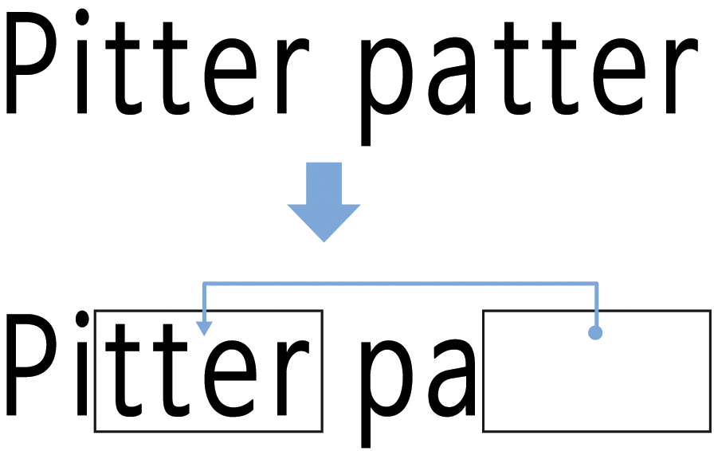
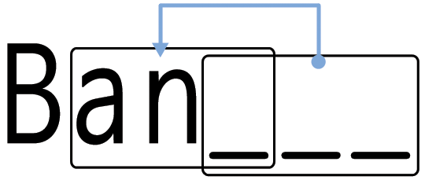
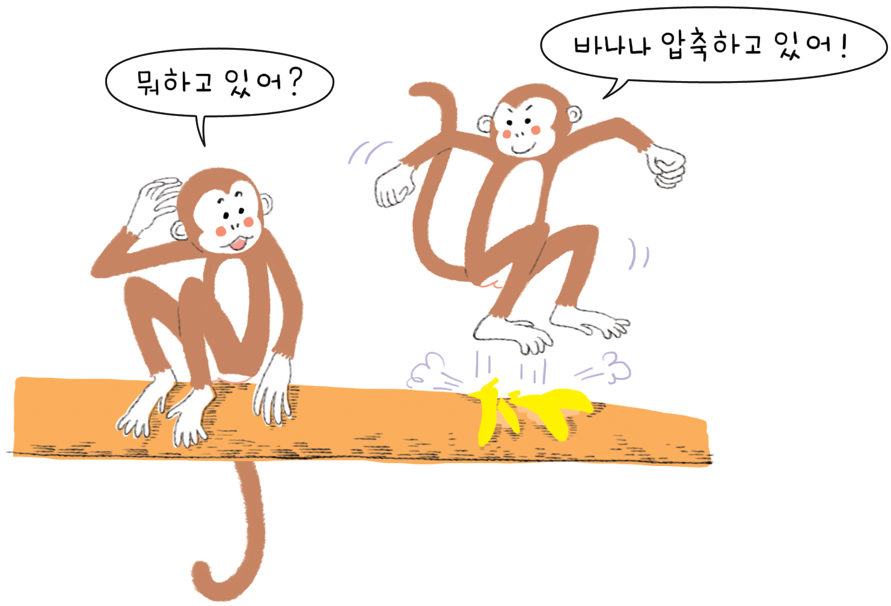

다시 말할 수 있어요!—텍스트 압축
개요
컴퓨터가 정보를 저장하기 위한 공간에는 한계가 있어서, 가능하면 효율적으로 정보를 표현할 필요가 있다. 이 방법을 “압축”(compression)이라고 한다. 저장하기 전에 데이터를 부호화(coding)하고 정보를 끌어낼 때는 복호화(decoding)해서, 컴퓨터에 더 많은 데이터를 저장하고 인터넷을 통해서 더 빨리 보낼 수 있게 한다.
교과학습 연계
- 영어: 단어와 텍스트 패턴 인식
- 기술: 기술 지식과 이해. 컴퓨터 작동원리
기술
글로 쓴 텍스트 복사
나이
- 9세 이상
학습 교재
- OHP 마스터에서 복사한 OHP 시트: 다시 말할 수 있어요! (25 페이지)
- 아이마다 필요한 것
– 워크시트 활동: 다시 말하기! (page 26) – 워크시트 활동: 심화 문제 (page 28) – 워크시트 활동: 짧고 간결하게 (page 29) – 워크시트 활동: 심화 문제 (상급자) (page 30)
다시 말할 수 있어요!
들어가며
컴퓨터는 많은 데이터를 저장하고 전송해야 합니다. 그래서 너무 많은 저장 공간을 사용하거나, 네트워크를 통해 정보를 보내는데 시간이 오래 걸리면 안돼서, 텍스트를 다음과 같이 압축합니다.
시연 및 토론
“비(rain)” OHP 로 보여주세요 (25 쪽). 다음 시(poem)에서 문자 패턴을 찾아보세요. 반복되는 2 개 이상의 문자, 단어, 문구를 찾을 수 있나요? (아래 도식에서처럼 박스를 채워넣으세요, 참고. pitter patter 타닥타닥 소리)

복사 마스터: 다시 말할 수 있어요!

- Rain: 비
- pitter patter: 빗소리
- Listen to:귀 기울여 듣다
- window pane: 창유리
복사 마스터: 다시 말할 수 있어요!
다음 시에서 많은 단어와 글자가 빠져있습니다. 여러분이 빠진 단어와 글자를 채워 넣어 온전한 시가 될 수 있도록 만들어 주세요. 화살표가 가리키는 박스에서 채워 넣을 단어와 글자를 찾을 수 있습니다.

이제 간단한 시나 동요를 골라서 여러분 자신만의 퍼즐을 만들어보세요. 여러분이 만든 화살표가 항상 이전 텍스트 부분을 가리키는지를 꼭 확인하세요. 우리가 읽는 동일한 방식으로 여러분의 시는 왼쪽에서 오른쪽으로 위에서 아래로 복호화할 수 있어야 합니다.
도전문제 : 여러분이 얼마나 적은 단어를 필요로 하는지 살펴보세요.
제안: “Three Blind Mice”, “Mary Mary Quite Contrary”, “Hickory Dickory Dock” 혹은 Dr Seuss 책도 시도해 보세요.
힌트: 너무나 많은 화살표를 피하세요. 글을 써가면서, 글자와 단어 주변에 많은 공백을 둬서 박스 내부와 이를 가리키는 화살표 사이에 박스를 위한 공간을 확보하세요.
시를 먼저 쓰고 나서 박스를 어디에 위치할지를 결정한다면 퍼즐 설계가 훨씬 쉬워요.
워크시트 활동: 심화 문제
이 퍼즐을 어떻게 풀 수 있나요?

가끔 빠진 텍스트가 자기 자신의 일부를 가리킵니다. 이런 경우 글자가 왼쪽부터 오른쪽으로 복사된다면 올바르게 복호화됩니다. 필요하기 전에 각 문자가 복사되어 사용가능해집니다. 특별히 긴 순서의 문자나 패턴있다면, 컴퓨터에서 유용합니다.
여러분 자신만의 그림을 몇개 그려보세요.
컴퓨터에 박스와 화살표는 숫자로 나타납니다. 예를 들어,
Banana
Ban_ _ _
Ban_ _
Banan_
Banana

숫자 두 개가 단어를 복호화하는데 사용되었는데, 대체로 둘 혹은 이상의 문자 그룹만을 사용할 때 압축에 효과가 있습니다. 그렇지 않은 경우 공간이 절약되지 못합니다. 사실, 숫자 두개를 사용하여 한 문자를 부호화한다면 파일 크기는 올라갈 수 있어요.
컴퓨터가 압축하는 방식과 동일하게 자신만의 단어 몇개를 만드세요. 여러분의 친구가 복호화할 수 있을까요?
워크시트 활동: 짧고 간결하게
여러분은 여기에서 얼마나 많은 단어를 필요로 하나요?
여러분 자신을 가능한 많은 정보를 디스크에 저장하려고 하는 컴퓨터라고 가정해봅시다. 이미 앞에서 나온 두개 이상의 문자 그룹을 선을 그어 지우세요. 포인터로 대체될테니 이들은 더 이상 필요하지 않아요. 목적은 가능한 많은 문자를 줄을 그어 지우는 것입니다.
I know an old lady who swallowed a bird
How absurd! She swallowed a bird!
She swallowed the bird to catch the spider
That wriggled and jiggled and tickled inside her
She swallowed the spider to catch the fly
I don’t know why she swallowed a fly
Perhaps she’ll die…
워크시트 활동: 심화 문제 (상급자)
정말로 어려운 압축에 도전할 준비가 되셨나요?
아래 이야기에 대해 컴퓨터 프로그램을 실행하여 1,633 문자가 줄을 그어 지워질 수 있다는 것을 확인했다. 여러분은 얼마나 많이 찾아 지울 수 있나요? 단지, 두개 이상의 반복되는 문자만을 줄을 그어 제거할 수 있다는 것을 기억하세요. 행운을 빕니다.
Once upon a time, long, long ago, three little pigs set out to make their fortunes. The first little pig wasn’t very clever, and decided to build his house out of straw, because it was cheap. The second little pig wasn’t very clever either, and decided to build his house out of sticks, for the “natural” look that was so very much in fashion, even in those days. The third little pig was much smarter than his two brothers, and bought a load of bricks in a nearby town, with which to construct a sturdy but comfortable country home.
Not long after his housewarming party, the first little pig was curled up in a chair reading a book, when there came a knock at the door. It was the big bad wolf, naturally.
“Little pig, little pig, let me come in!” cried the wolf.
“Not by the hair on my chinny-chin-chin!” squealed the first little pig.
“Then I’ll huff, and I’ll puff, and I’ll blow your house down!” roared the wolf, and he did huff, and he did puff, and the house soon collapsed. The first little pig ran as fast as he could to the house of sticks, and was soon safe inside. But it wasn’t long before the wolf came calling again.
“Little pig, little pig, let me come in!” cried the wolf.
“Not by the hair on my chinny-chin-chin!” squealed the second little pig.
“Then I’ll huff, and I’ll puff, and I’ll blow your house down!” roared the wolf, and he did huff, and he did puff, and the house was soon so much firewood. The two terrified little pigs ran all the way to their brother’s brick house, but the wolf was hot on their heels, and soon he was on the doorstep.
“Little pig, little pig, let me come in!” cried the wolf.
“Not by the hair on my chinny-chin-chin!” squealed the third little pig.
“Then I’ll huff, and I’ll puff, and I’ll blow your house down!” roared the wolf, and he huffed, and he puffed, and he huffed some more, but of course, the house was built of brick, and the wolf was soon out of breath. Then he had an idea. The chimney! He clambered up a handy oak tree onto the roof, only to find that there was no chimney, because the third little pig, being conscious of the environment, had installed electric heating. In his frustration, the wolf slipped and fell off the roof, breaking his left leg, and severely injuring his pride. As he limped away, the pigs laughed, and remarked how much more sensible it was to live in the city, where the only wolves were in the zoo. And so that is what they did, and of course they all lived happily ever after.컴퓨터 과학 핵심 개념
컴퓨터 저장용량은 믿기 힘든 속도로 빠르게 늘어나고 있다. 지난 25년간 일반인들이 사용하는 컴퓨터 저장용량은 백만 배 늘어났다. 하지만, 컴퓨터에 저장할 더 많은 것이 있다. 컴퓨터는 책 전체를 저장할 수 있고, 심지어 도서관의 모든 책, 음악, 영화도 저장공간만 허락된다면 저장할 수 있다. 큰 파일은 다운로드 하는데 긴 시간이 걸려서 인터넷에서도 골치거리다. 또한, 컴퓨터를 점점 더 소형화 하여 스마트폰과 스마트워치에 좀더 많은 정보가 저장되길 기대한다.
하지만, 이 문제에 해결책은 있다. 더 많은 저장 공간이나 더 빠른 네트워크를 구축하는 대신에, 데이터를 *압축해서** 적은 공간을 차지하도록 할 수 있다. 데이터를 압축하고 압축을 푸는 과정은 컴퓨터가 자동으로 해준다. 아프로 디스크는 점점 더 많은 정보를 저장하게 되고, 웹페이지는 더 빨리 화면에 정보를 뿌려주지만, 실제로 컴퓨터가 더 많은 연산처리를 한다는 것에 주목해야 한다.
많은 압축기법이 발명되었다. 이 활동에 사용된 방법이면서, 먼저 출현한 텍스트를 가리키는 원칙을 가진 압축기법은 1970년대 두명의 이스라엘 교수님이 발명하신 ‘Ziv-Lempel coding,’ 줄여서 ‘LZ coding’ 이라고 한다. 이 방법은 어떤 언어에도 사용될 수 있는 범용성이 있고, 쉽게 데이터 크기를 반으로 압축할 수도 있다. 개인용 컴퓨터의 zip 파일을 지칭하기도 하고, GIF 이미지, 초고속 모뎀에도 사용된다. 모뎀의 경우 전화선을 통해서 전송에 필요한 데이터 양을 줄여 더 빨리 데이터가 전송이 되도록 한다.
더 많이 출현하는 문자가 다른 것보다 짧은 부호를 가져야 한다는 아이디어에 기초한 다른 방법도 있다. 모스 부호(Morse code)가 이러한 아이디어를 차용했다.해답과 힌트
다시 말할 수 있어요! (복사 마스터)

다시 말할 수 있어요!
Pease porridge hot,
Pease porridge cold,
Pease porridge in the pot,
Nine days old.
Some like it hot,
Some like it cold,
Some like it in the pot,
Nine days old.